Parcours de l'artisan : ce qui serait mieux
J'ai joué les gestes de l'artisan au téléphone (390 px), toucher par toucher, sur une copie de la base du banc. Chaque constat montre sa capture. Sous chacun, votre choix : à faire, plus tard, ou non.
En bref
Le chemin de la dictée à l'envoi est court et le restera. Les défauts se trouvent autour : la relecture d'une ligne sans prix, la page de l'offre qui cache ses lignes, l'ajout d'une ligne qui perd l'artisan, la liste des offres sans recherche.
Par ordre d'effet sur l'artisan :
- Relecture d'une ligne sans prix : « C'est juste » reste proposé, des messages rouges s'empilent et restent affichés jusque sur l'écran « Toutes les lignes sont relues ». Défaut.
- Deux comptes pour la même offre : « 3 à vérifier » dans la liste, « Relire 5 lignes » sur l'offre. Défaut.
- Page de l'offre : la première ligne commence à 60 % du premier écran ; 6,3 écrans pour 33 lignes.
- Ajouter une ligne : après « Terminé », la page revient en haut ; la ligne ajoutée est tout en bas, sans repère.
- Mes offres : aucune recherche, alors que Clients, Catalogue et Factures en ont une.
Trois constats plus légers suivent (fiche d'une ligne, après l'envoi, « Se déconnecter »).
Les parcours, en touchers
Comptés en jouant chaque parcours (Chromium, téléphone 390 x 844). « Après les lots validés » : la règle « offre propre, PDF » que vous avez validée le 26.11 et qui reste à coder.
| Parcours | Aujourd'hui | Après les lots validés | Remarque |
|---|---|---|---|
| Fin de dictée vers le PDF, offre propre, client connu | 1 | 0 | « Générer l'offre » disparaît. |
| Fin de dictée vers le PDF, offre propre, nouveau client | 3 | 2 | Générer, « Créer la fiche », « Enregistrer et voir le PDF ». La fiche arrive remplie d'après la dictée. |
| Fin de dictée vers le PDF, N lignes à relire | N + 2 | N + 1 | Relire, N fois « C'est juste », Générer. |
| Envoyer depuis le PDF | 1 | 1 | Puis le partage du téléphone. |
| Corriger une quantité ou un prix | 1 + saisie | 1 + saisie | Enregistré tout seul, l'en-tête le dit. Rien à changer. |
| Supprimer une ligne | 1 | 1 | « Annuler » reste affiché. Rien à changer. |
| Ajouter une ligne du catalogue | 3, puis chercher la ligne | 3, puis chercher la ligne | + Ligne, le produit, Terminé. Voir le constat 4. |
| Facturer une offre envoyée | 2 | 2 | Facturer, « Créer la facture ». Rien à changer. |
| Retrouver une offre ancienne | défiler | défiler | Aucune recherche. Voir le constat 5. |
Les constats
Défaut1. Relecture : la ligne sans prix
Ce qui se passe. Sur une ligne où le prix manque (« Prix ? »), le bouton vert « C'est juste » reste proposé. Le toucher affiche « Pas enregistré : Indiquez le prix en francs […] L'envoi a échoué. » Chaque toucher ajoute un message par-dessus le précédent : deux touchers, deux messages. Ils restent à l'écran après la correction, jusque sur « Toutes les lignes sont relues ».
Pourquoi c'est grave. L'artisan lit un message d'échec rouge sur l'écran qui lui annonce que tout est relu. « L'envoi a échoué » parle d'un envoi alors qu'il manque un prix.
Proposition. Sur une ligne sans prix, le curseur va dans le prix et le bouton dit « Indiquez le prix » tant que le champ est vide. Un message remplace le précédent et disparaît à la ligne suivante. Le texte s'arrête à « Indiquez le prix en francs, par exemple 28 ou 28.50 ; 0 pour l'offrir. »
Coût estimé : 1 h 30.
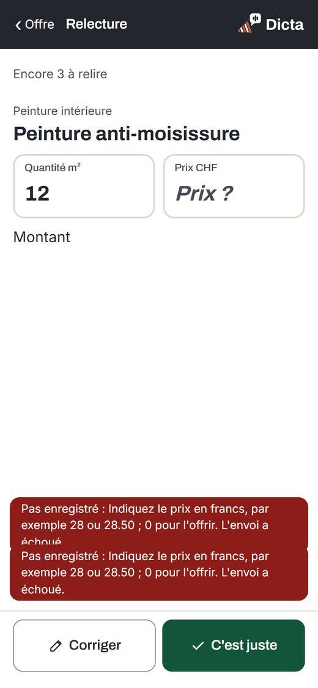
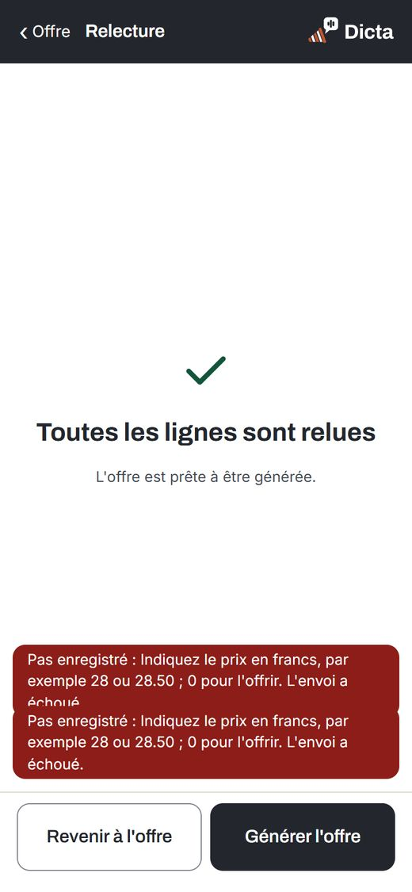
Défaut2. « 3 à vérifier » ici, « Relire 5 lignes » là
Ce qui se passe. Pour la même offre, la liste annonce 3 et le bouton de l'offre 5. La liste compte les lignes incertaines ; la relecture y ajoute les lignes sans prix (lu dans le code : AccueilControleur ligne 108 et RelectureControleur::aRelire).
Proposition. Un seul compte partout, celui de la relecture, et un seul mot. Je propose « 5 à relire » dans la liste, comme sur le bouton.
Coût estimé : 30 minutes. À poser dans le lot « arrivée » : l'écran « Offre prête » affichera ce même compte.
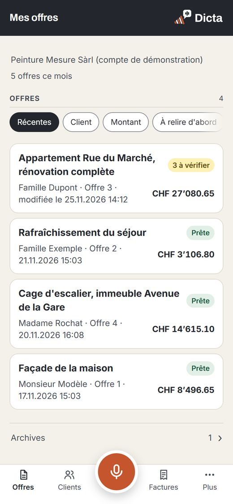
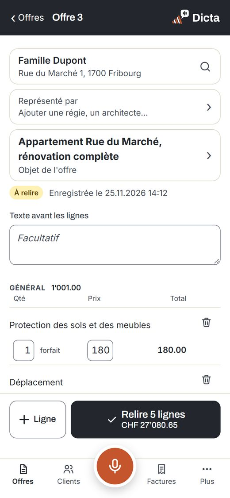
Friction3. Page de l'offre : les lignes arrivent tard
Ce qui se passe. Avant la première ligne : le client, « Représenté par » (vide), l'objet, l'état, puis le champ « Texte avant les lignes » (vide). La première ligne commence à 60 % du premier écran, une ligne et demie se voit. En bas, deux barres fixes et le micro prennent encore 170 px environ. L'offre de 33 lignes fait 6,3 écrans.
Proposition. Tant qu'ils sont vides, « Représenté par » et « Texte avant les lignes » deviennent deux liens courts sur une ligne (« + Représentant », « + Texte avant les lignes »). Remplis, ils reprennent leur place. Gain estimé sur la capture : environ 170 px, soit près de deux lignes de plus au premier écran.
Coût estimé : 1 h 30. Le lien « + Texte avant les lignes » figurait déjà dans la piste A de la maquette v1.
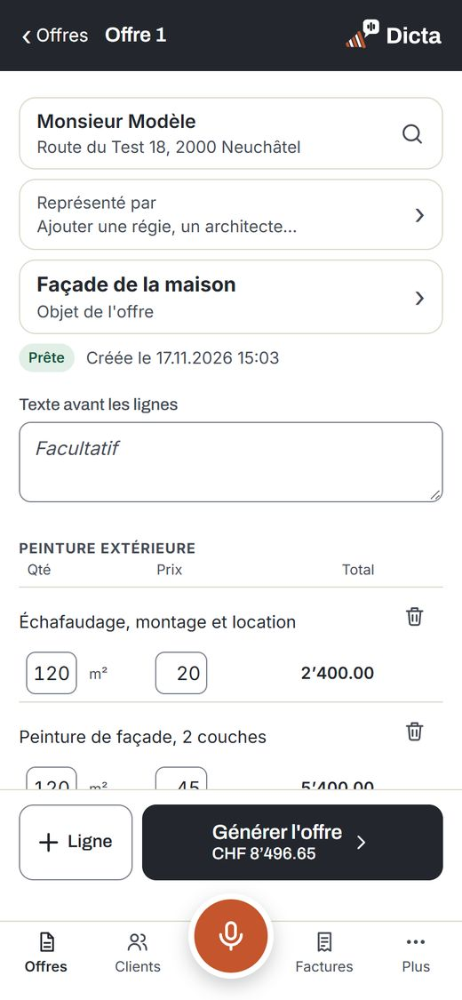
Friction4. Ajouter une ligne : où est-elle passée ?
Ce qui se passe. + Ligne, un produit, « Terminé » : trois touchers, et la fenêtre confirme « Benne de chantier ajoutée ». Puis la page revient tout en haut. La ligne ajoutée est en bas, dans sa catégorie, sans repère, avec sa quantité par défaut : il faut défiler pour la trouver et la régler.
Deux détails dans la fenêtre : le choix « Dans le total, Option, Variante » passe avant la recherche alors qu'il sert rarement, et le texte du champ est coupé (« Chercher un produit ou taper une lign »).
Proposition. À « Terminé », la page défile jusqu'à la dernière ligne ajoutée, l'éclaire, et pose le curseur dans sa quantité. La recherche passe en premier, « Elle va » en dessous. Texte du champ : « Chercher ou taper une ligne ».
Coût estimé : 1 h 30.
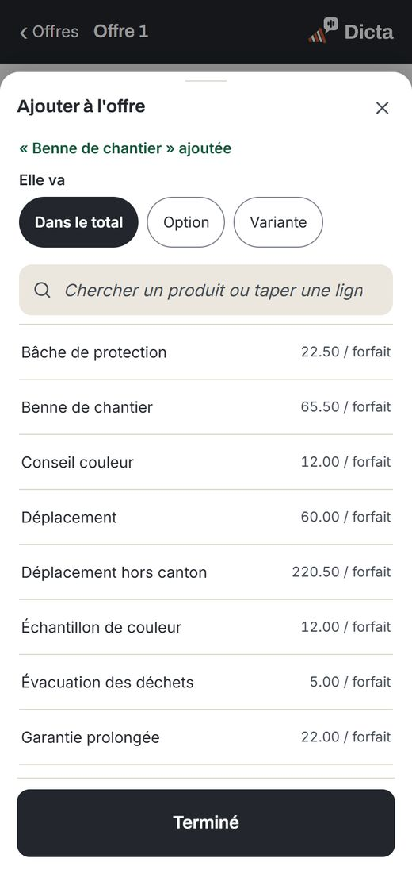
Friction5. Mes offres : pas de recherche
Ce qui se passe. Clients (« Chercher un nom, une localité »), Catalogue et Factures ont un champ de recherche. La liste des offres n'a que quatre tris. Avec quatre offres, cela ne se voit pas ; avec cent, l'artisan qui cherche « Dupont » défile.
Proposition. Le même champ en tête de liste : « Chercher une offre, un client ». Il filtre sur le titre, le client et le numéro.
Coût estimé : 2 h (serveur et écran). Peut attendre les premiers comptes à plusieurs dizaines d'offres.
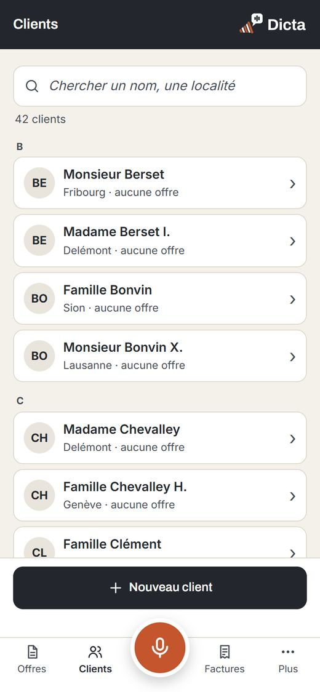
Détail6. Fiche d'une ligne : tout au même niveau
Ce qui se passe. La fiche montre d'un bloc la désignation, la quantité, l'unité, le prix, « Facturée ou Offerte », « Dans le total, Option, Variante », « + Variante » et trois taux de TVA. Les réglages rares pèsent autant que la quantité et le prix.
Proposition. Désignation, quantité, unité et prix d'abord. Le reste replié sous « Plus de réglages », ouvert d'office quand un de ces réglages est déjà utilisé sur la ligne.
Coût estimé : 1 h.
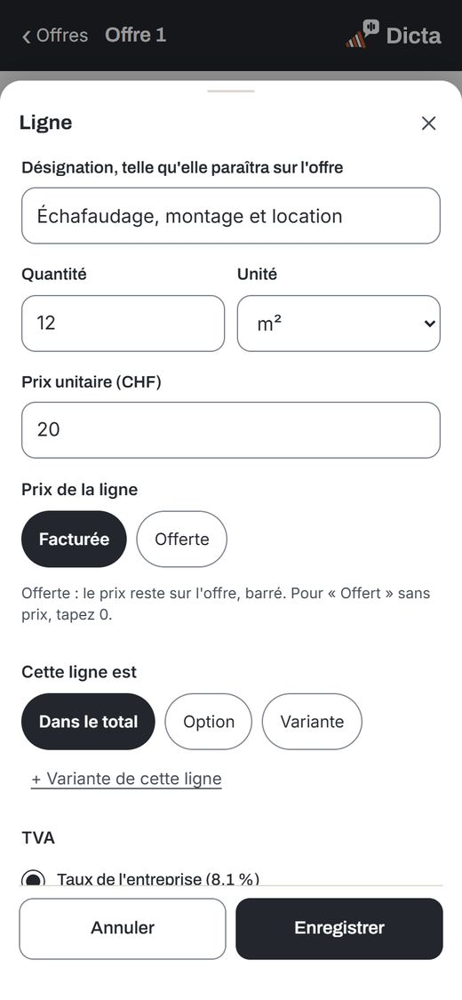
Détail7. Après « Envoyer » : et maintenant ?
Ce qui se passe. L'envoi fait, « Offre 2 envoyée » s'affiche et l'écran reste le même : « Envoyer » est toujours le bouton principal. Rien ne dit quoi faire ensuite.
Proposition. Une fois l'offre envoyée, le bouton principal devient « Retour aux offres » ; « Renvoyer » et « Facturer » restent à côté.
Coût estimé : 30 minutes.
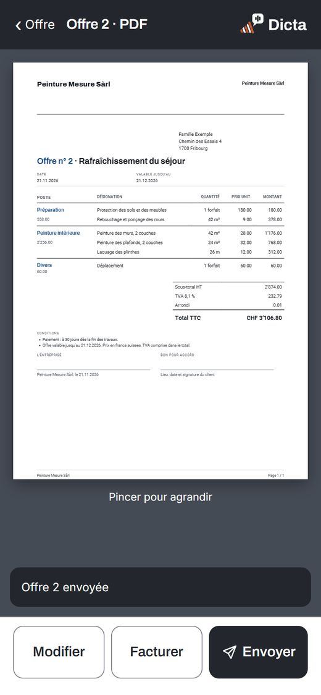
Détail8. « Se déconnecter », deux fois et en grand
Ce qui se passe. Dans « Plus », « Se déconnecter » est un bouton de toute la largeur juste sous les quatre entrées. Il existe aussi dans Réglages, en lien discret. Un geste rare occupe la place d'une action courante.
Proposition. Le garder une fois, en lien discret au bas de « Plus », avec l'adresse du compte.
Coût estimé : 15 minutes.
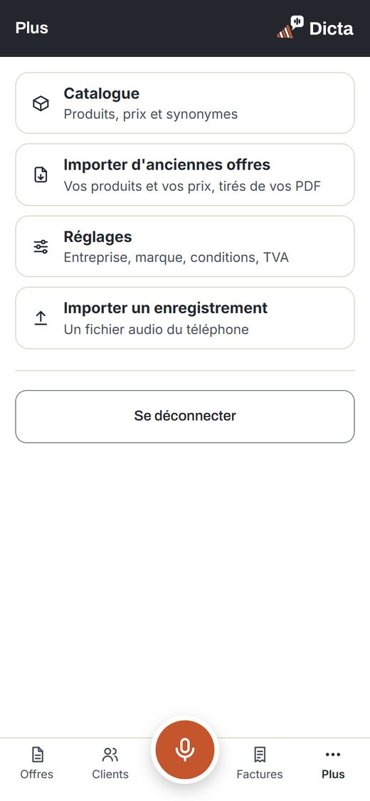
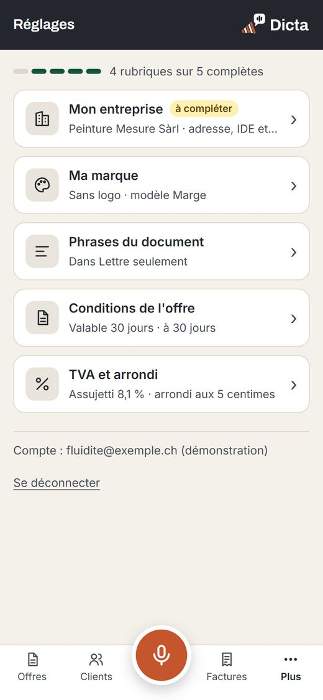
Ce qui marche, à garder
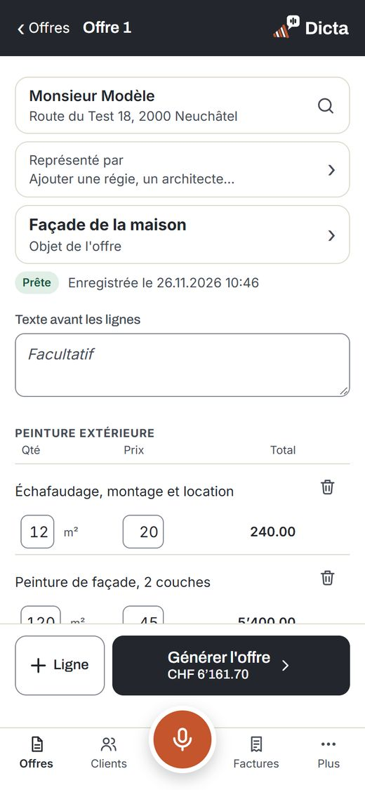
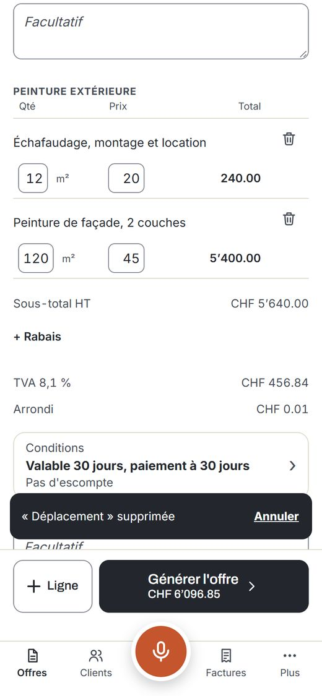
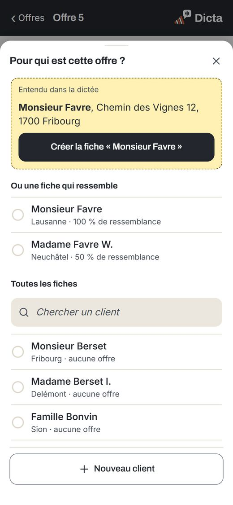
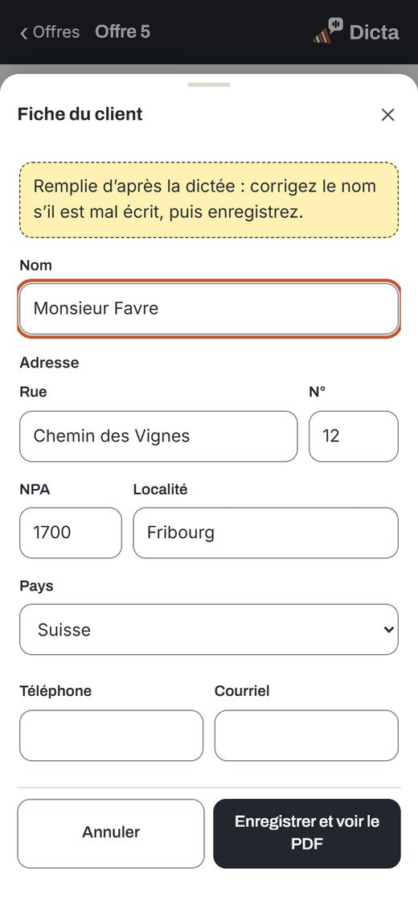
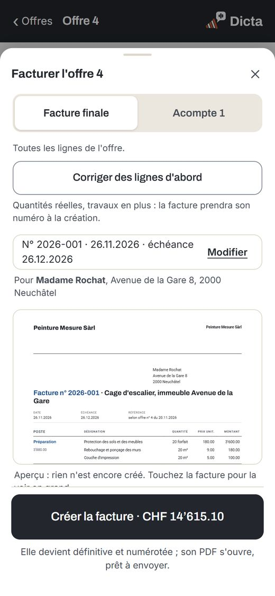
Relevé sur dix écrans : aucun bouton ni lien sous 44 px. Deux cases à cocher de 26 px sur l'offre 3 ; leur libellé agrandit sans doute la cible, je ne l'ai pas vérifié.
Ce que cette analyse ne couvre pas
- Un seul écran : téléphone de 390 px dans Chromium. Ni le PC, ni la tablette, ni un vrai iPhone ; le clavier du téléphone n'apparaît pas dans ces captures.
- Des données de banc : un compte de peintre, cinq offres, 274 produits. Je n'ai observé aucune longue liste : l'effet de cent offres est une déduction.
- Pas d'artisan : ce sont mes constats d'après les écrans et le code. Les essais de Luigi et des autres trancheront mieux que moi sur l'ordre des priorités.
- Hors champ : la dictée elle-même (traitée par les deux maquettes), le premier lancement, les réglages en détail, l'import du catalogue, l'administration.
Vos réponses
Elles restent dans ce navigateur. Le bouton copie le texte à coller dans la conversation.